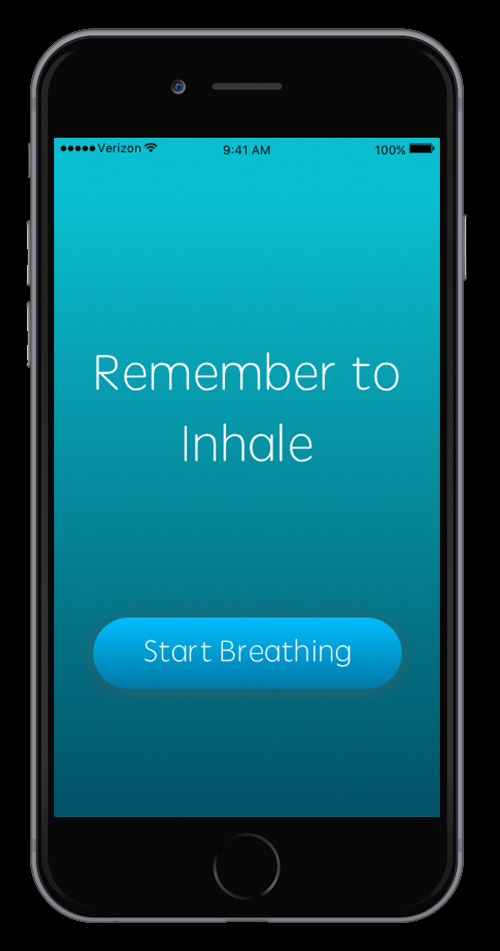
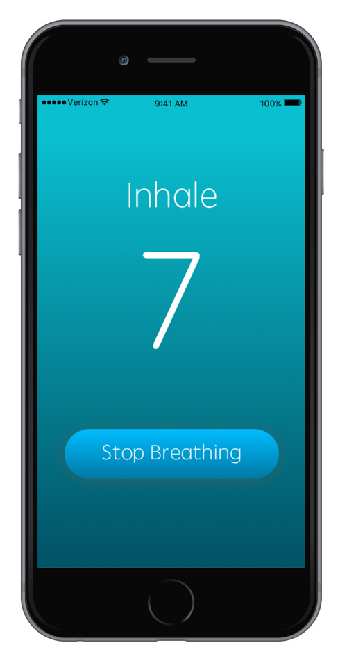
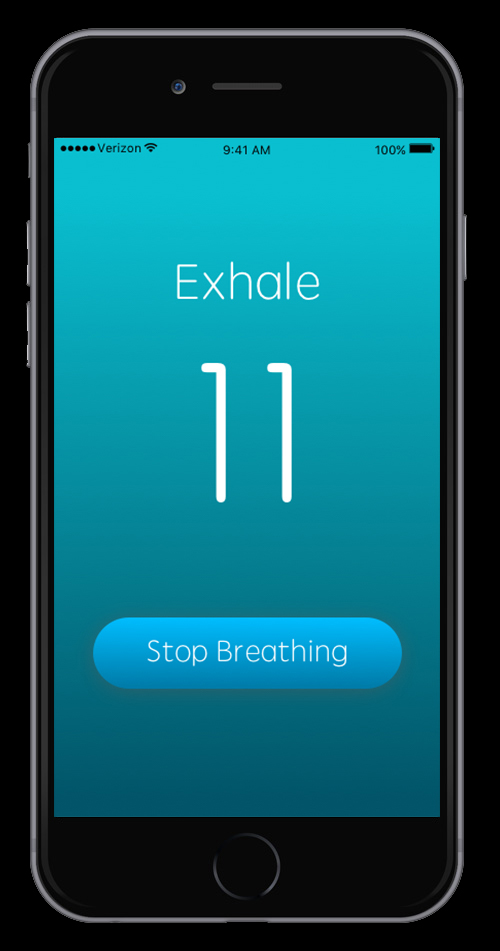
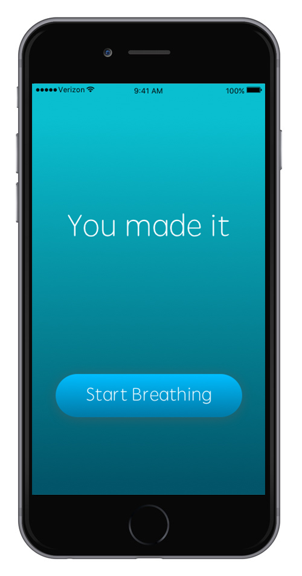

Breathe is a mobile application designed to swiftly provide relief in dire physical or psychological breakdowns, such as anxiety attacks.
The project was designed using Sketch and animated with InVision.
As someone who has been with people who experienced anxiety attacks first hand, it was scary seeing it happen for the first time. When it happened, I wasn't sure what to do so I just held them really tight. But what if I wasn't there?
   After conducting research, I discovered the 7-11 breathing method, where you inhale for 7 seconds and exhale for 11 seconds. This is proven to help calm the mind and relax body, which can be effective in stablizing a panic attack. However, you are not restricted to those numbers, as long as it gets you into the rhythm of having your exhales longer than your inhales.
Interesting to note, a common reason why the breathing is so hard during the attack is because the person actually forgets to inhale when it happens, which is why it is the first reminder a user sees when opening the application.
Try out the prototype here!
While testing other stress relief applications, I noticed one common factor: it wasn't snappy. When the application is opened, they would ask the user to perform a series of actions ranging from signing in to logging in their current state. Breathe is more focused on being immediately available because attacks can happen within seconds.
This is why it goes straight into the functionality of helping the user gain control of their breathing. What I want is to make sure no one feels like they are not in control during these attacks.
Back to Home